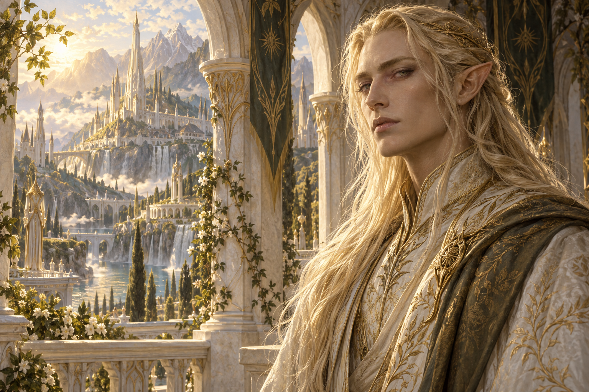
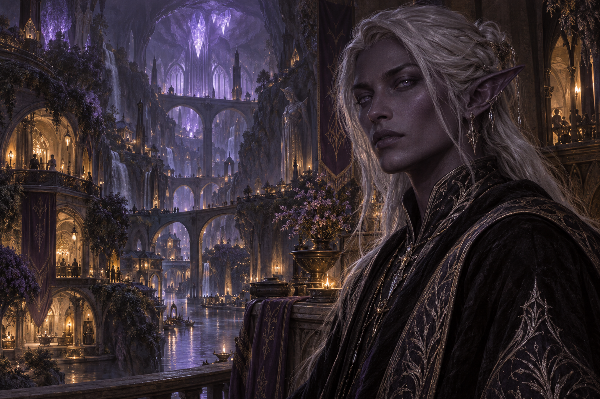

A FANTASY ROMANCE
One blood.
Two worlds. One bond.
Divided by centuries. Bound by something older.
Enter a world where inherited magic remembers what history forgot.
THE WORLD AT A GLANCESCROLL TO DISCOVER ↓

01 / THE SUN ALLIANCE☼
LIGHT · LINEAGE · ORDER
The Sun Elves
Radiant cities. Carefully woven bloodlines.
A civilization built to master uncertainty.

02 / THE UNDERGROUND ALLIANCE☾
MOONLIGHT · MYSTERY · CHANGE
The Dark Elves
A shared city beneath the earth.
A people who make room for the unknown.
✧
A Sun Elf and a Dark Elf become fated mates.
Their blood recognizes a connection their civilizations deny.
Fate makes the connection.
They must choose what comes next.